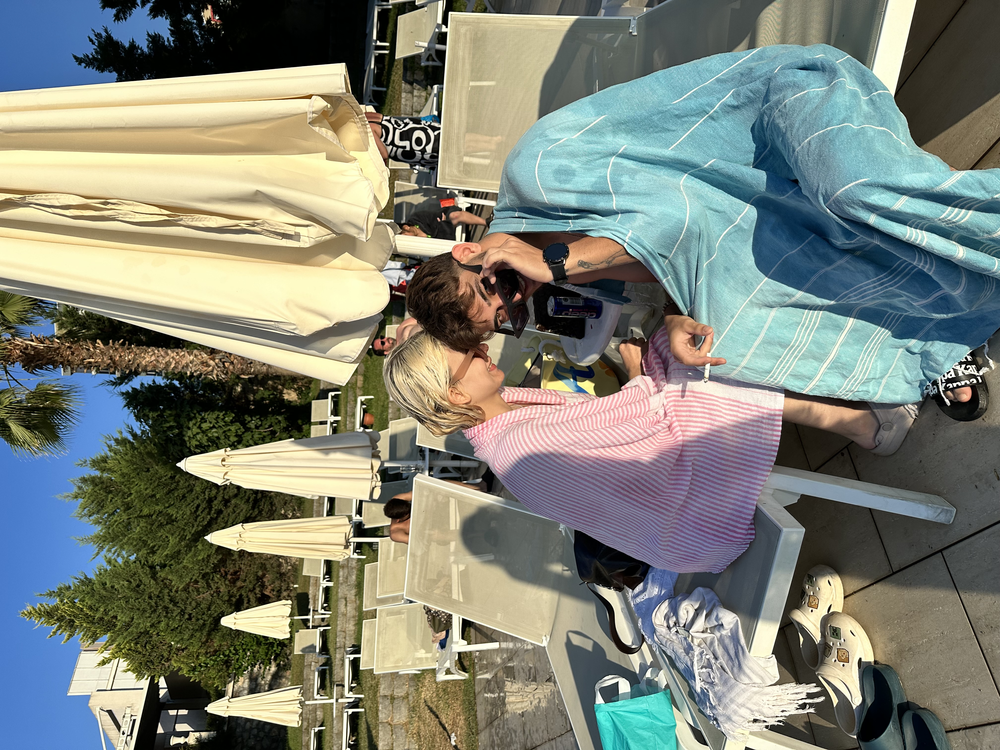
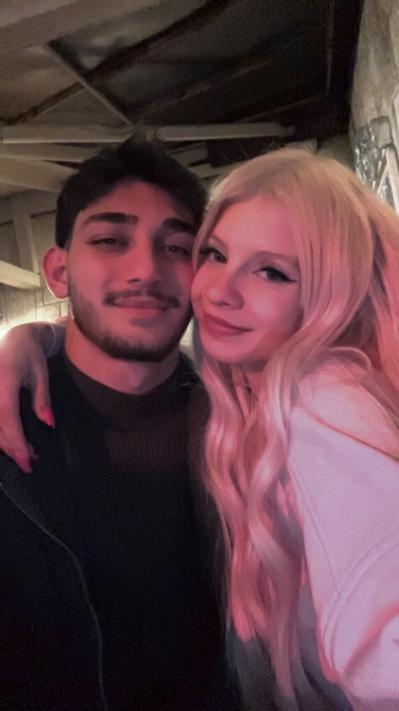

🔒 SADECE BİZE ÖZEL - ŞİFRE: 0825
Gökdeniz
❤️
Aylin
Bu site sadece senin için Aylin.
Şifreyi bilen girebilir.
📸 Bizim En Güzel Anılarımız

Bu kalp ışıklarının önünde, sen kalp yaptın ya... İşte o an dedim ki "ben bu kızı bırakmam" ❤️



"Aylin, sen benim hayatıma girdiğinden beri
hiçbir şey eskisi gibi değil.
Her şey daha güzel, daha anlamlı."
hiçbir şey eskisi gibi değil.
Her şey daha güzel, daha anlamlı."
- Gökdeniz'den Aylin'e
💌 1. Mektup: Seni Neden Bu Kadar Çok Seviyorum?
Aylin'im,
Bunu buraya yazıyorum ki sadece sen bilesin. Ben seni öyle sıradan bir şekilde sevmiyorum. Ben seni, sabah uyanınca aklıma ilk gelen, gece yatmadan önce aklımdan son çıkan kişi olarak seviyorum.
Senin gülüşün benim en sevdiğim şarkıdan daha güzel. Senin sesin, kötü geçen bir günümü bile bir anda güzelleştiriyor.
Bazıları "sevgi geçer" diyor. Benimki geçmiyor. Benimki her gün biraz daha artıyor. Seni ilk tanıdığım günle bugünü kıyaslıyorum, bugün seni 100 kat daha fazla seviyorum.
Bu sevgi paha biçilemez. Ne parayla alınır, ne de başka bir şeyle ölçülür. Çünkü sen benim için her şeyden daha değerlisin.
Fotoğraflarımıza bakınca anlıyorum, biz gerçekten çok güzeliz.
- Sonsuza kadar senin olan Gökdeniz
Bunu buraya yazıyorum ki sadece sen bilesin. Ben seni öyle sıradan bir şekilde sevmiyorum. Ben seni, sabah uyanınca aklıma ilk gelen, gece yatmadan önce aklımdan son çıkan kişi olarak seviyorum.
Senin gülüşün benim en sevdiğim şarkıdan daha güzel. Senin sesin, kötü geçen bir günümü bile bir anda güzelleştiriyor.
Bazıları "sevgi geçer" diyor. Benimki geçmiyor. Benimki her gün biraz daha artıyor. Seni ilk tanıdığım günle bugünü kıyaslıyorum, bugün seni 100 kat daha fazla seviyorum.
Bu sevgi paha biçilemez. Ne parayla alınır, ne de başka bir şeyle ölçülür. Çünkü sen benim için her şeyden daha değerlisin.
Fotoğraflarımıza bakınca anlıyorum, biz gerçekten çok güzeliz.
- Sonsuza kadar senin olan Gökdeniz
❤️ Aylin'i Sevme Nedenlerim
😊Gülüşü Dünyanın En Güzel Şeyi
👀Gözleri Baktıkça Kayboluyorum
💬Konuşması Bile Huzur Veriyor
🤍Kalbi Tertemiz, Çok İyi Biri
✨Yanında Kendimi En İyi Hissediyorum
🔥Onu Düşününce Kalbim Hızlı Atıyor
📖 Makale: Paha Biçilemez Bir Sevgi Nedir?
Bazı sevgiler vardır, anlatılmaz. Gökdeniz'in Aylin'e olan sevgisi tam olarak böyledir.
Paha biçilemez bir sevgi demek; karşılık beklemeden sevmek demektir. Aylin üzgünken Gökdeniz'in de üzülmesi, Aylin gülünce Gökdeniz'in de gülmesi demektir.
Bu sevgi, bir hediye ile ölçülmez. Bu sevgi, her gün "iyi ki varsın" diyebilmektir. Sabah "günaydın" mesajı atmadan duramamaktır.
Gökdeniz, Aylin'i sadece sevgilisi olarak değil, en yakın arkadaşı, sırdaşı, her şeyi olarak seviyor.
💌 Söz Veriyorum
Aylin, sana burada söz veriyorum:
1. Seni her gün daha çok seveceğim.
2. Üzgünken seni asla yalnız bırakmayacağım.
3. Ne olursa olsun senin yanında olacağım.
4. Seni kimseye değişmeyeceğim.
5. Bu site kapanırsa bile, benim sana olan sevgim kapanmayacak.
Sen benim en güzel şansımsın. İyi ki hayatıma girmişsin.
- Gökdeniz
1. Seni her gün daha çok seveceğim.
2. Üzgünken seni asla yalnız bırakmayacağım.
3. Ne olursa olsun senin yanında olacağım.
4. Seni kimseye değişmeyeceğim.
5. Bu site kapanırsa bile, benim sana olan sevgim kapanmayacak.
Sen benim en güzel şansımsın. İyi ki hayatıma girmişsin.
- Gökdeniz
Bu site açıldığından beri
0saniyedir Gökdeniz Aylin'i düşünüyor ❤️
Aylin, Bunu Okuyorsan...
Seni çok seviyorum.
İyi ki varsın.
İyi ki benimsin. ❤️
Gökdeniz - Sonsuza Dek